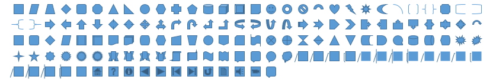
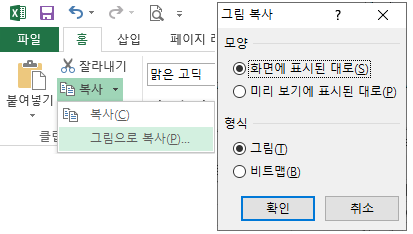

vba 변수선언
도형 > 종류, 만들기
도형 > 도형의 선택, 위치확인, Dim 도형 As Shape : Set 도형 = 1개의 도형
도형 > 도형 종류 확인 Type, 삭제, 내용변경, 도형에 OnAction(매크로이름) 지정
도형 > 내용확인, 분석
폼 > 폼위치, Top, Left
그림 > 화면복사 방법, 폼에 그림으로 넣었을때 어떻게 보이는지
그림 > 그림으로 복사한 범위를 챠트에 담아 내보내기 Export, 폴더의 파일 삭제 Kill, 폼내 Image 컨트롤로 가져오기 LoadPicture, 시트에 삽입하기 Insert
copy_cut_paste,카피_컷_붙여넣기
주요 문자열 코드 > 큰따옴표, 엔터, 줄바꿈(vblf)
find찾기, 바꾸기
column > columnwidth, 열숨기기/보기, join, split, array
배열_선언 > 셀범위, Array, Ubound, Lbound, Split, Join, Transpose
배열_Range에서 > 배열을 Range에 적용시 어떻게 표시되는지
diddid참고_특수문자.txt
메모_클래스나 아이디에에 하이픈은 되는데, js에서는 하이픈 인식안됨
줄바꿈_배분정렬과wordBreak_overflow_nowarp_whitespace_aligntop_요소내줄간격
Dim int1, int2, int3, int4 As Integer 라고 선언시
• int4만 Integer이고 나머진 variant형으로 선언이 되므로 주의하여야 한다.
Visual Basic에서는 아래 형식으로 모두 Date타입 선언이 된다.
• Dim lastTime, nextTime, allTimes() As Date
VBA(Visual Basic for Applications)에서는 변수명마다 type을 지정해주어야 한다.
• Dim lastTime, nextTime, allTimes() As Date
변수형을 따로 지정하지 않으면 lastTime, nextTime은 Variant형으로 지정된다.
allTimes() As Date만 Date 타입으로 지정된다.
• vba에서 모두 Date 타입으로 변수를 선언하려면 아래와 같이
Dim lastTime As Date, nextTime As Date, allTimes() As Date
참고사항
• Shapes 객체는 ActiveSheet.Shapes 형태로 시트단위?, 범위.Shapes 형태로 사용이 아님
• 도형을 select하였을때 selection.Type이 안되는 경우? => 도형변수.Type 형태로 사용해야?
• Shapes(순번) : 1부터 시작되는 순번의 도형, Shapes.Range(배열) : 배열의 값이 숫자면 순번이고 문자열이면 Name이다
- ActiveSheet.Shapes.Range(Array(1, 3)).Select
- ActiveSheet.Shapes.Range(Array("그림 8", "그림 10")).Select
- Dim 배열(1 to 2) As String / 배열(1)="그림 8" / 배열(2)="그림 10" / ActiveSheet.Shapes.Range(Array(배열)).Select
도형의 종류 (ActiveSheet.Shapes.AddShape는 MsoAutoShapeType의 도형을 만드는 코드다)
'MsoShapeType
번호
이름
'MsoShapeType
번호
이름
'msoAutoShape
1
AutoShape
'msoCallout
2
Callout
'msoChart
3
Chart
'msoComment
4
Comment
'msoDiagram
21
Diagram
'msoEmbeddedOLEObject
7
Embedded OLE object
'msoFormControl
8
Form control
'msoFreeform
5
Freeform
'msoGroup
6
Group
'msoIgxGraphic
24
SmartArt graphic
'msoInk
22
Ink
'msoInkComment
23
Ink comment
'msoLine
9
Line
'msoLinkedOLEObject
10
Linked OLE object
'msoLinkedPicture
11
Linked picture
'msoMedia
16
Media
'msoOLEControlObject
12
OLE control object (ActiveX controls)
'msoPicture
13
Picture
'msoPlaceholder
14
Placeholder
'msoScriptAnchor
18
Script anchor
'msoShapeTypeMixed -
2
Mixed shape type
'msoTable
19
Table
'msoTextBox
17
Text box
'msoTextEffect
15
Text effect
'msoCanvas
20
Canvas
msoAutoShape 타입 도형(Type번호 1, 이름 AutoShape) 만들기 코드
• ActiveSheet.Shapes.AddShape(MsoAutoShapeType[타입이름문자열],Left, Top, Width, Height).Select
• .Select 가 없으면 에러가 나는 이유?? 관련정보
- 괄호가 있을 때는 함수의 기능을 하여 반환하는 값이 발생하고, (함수가 되므로 반환하는 값을 저장할 변수가 지정되어야 함)
괄호가 없을 때는 단순 명령으로 끝난다.
• .Select 없이 변수를 사용하여 생성만하는 코드
Dim 도형 As Shape
Set 도형 = ActiveSheet.Shapes.AddShape(msoShapeRectangle, 10, 10, 10, 10)
• ActiveSheet.Shapes.AddShape(msoShapeRectangle, 34.5, 103.5, 72, 26.25).Select
• Left, Top, Width, Height 지정해야하고 '.Select'
• MsoAutoShapeType 부분에 숫자를 넣으면 생성되는, 해당인덱스의 도형(Type 번호가 아님), 예)1~137까지 된다.

msoTextNpx 타입 도형(Type번호 17, 이름 Text Box) 만들기 코드
• ActiveSheet.Shapes.AddTextbox(msoTextOrientationHorizontal, 266.25, 57.75, 80.25, 29.25).Select
• msoTextOrientationHorizontal 부분에 숫자를 넣으면 1~6까지 된다. 모양이 같아보임
msoChart 타입 도형(Type번호 3, 이름 Chart) 만들기 코드
• ActiveSheet.Shapes.AddChart2(251, xlPie).Select
종류가 많으니, vba에서 개체찾기 클릭후 chart등 검색어 입력후 참고

자동 매크로 기록으로 텍스트상자 만들기 예시
• Sub 매크로9()
ActiveSheet.DrawingObjects.Delete
'1.가로텍스트상자 만들기
ActiveSheet.Shapes.AddTextbox(msoTextOrientationHorizontal, 215.25, 102, 180.75, 32.25).Select
'2.내용기록 : "가로텍스트상자"
Selection.ShapeRange(1).TextFrame2.TextRange.Characters.Text = "가로텍스트상자"
'3.Characters.Text는 글자 입력이고, 들여쓰기(양수/음수)는 Characters(시작, 글자수) 시작 첫번째는 1
Selection.ShapeRange(1).TextFrame2.TextRange.Characters(1, 7).ParagraphFormat.FirstLineIndent = 2
'4. 세번째 글자부터 글자3개를 글자크기 크게(18), 굵게
Selection.ShapeRange(1).TextFrame2.TextRange.Characters(3, 3).Font.Size = 18
Selection.ShapeRange(1).TextFrame2.TextRange.Characters(3, 3).Font.Bold = msoTrue
'※ TextFrame구체적인 예: 문자의 색상을 설정하려면 TextFrame을 사용해야 하지만
' 간격을 설정하려면 TextFrame2를 사용해야 하는 것 같습니다. 샘플 코드:
' pptShape.TextFrame.TextRange.Characters(i, 1).Font.Color = vbRed
' pptShape.TextFrame2.TextRange.Characters(i, 1).Font.Spacing = -1
'6. 개체가 아래 셀에 연결되는 방식을 나타내는 XlPlacement 값을 반환하거나 설정합니다 .
' 속성에서 "위치만 변함" 선택하였음.
Selection.Placement = xlMove
'7. 텍스트상자
With Selection.ShapeRange.TextFrame2
.VerticalAnchor = msoAnchorMiddle '세로맞춤=중간
.HorizontalAnchor = msoAnchorNone '가로맞춤=설정안함
End With
' 채우기 Fill..Visible = msoTrue 먼저(색상, 투명도 등)
With Selection.ShapeRange.Fill
.Visible = msoTrue
.ForeColor.RGB = RGB(255, 255, 0) '노란색 색상
.Transparency = 0.6399999857 '투명도
.Solid '균일한 색상으로
End With
' 테두리
With Selection.ShapeRange.Line
.Visible = msoTrue
.ForeColor.ObjectThemeColor = msoThemeColorText1 '라인 테두리 형식
.ForeColor.TintAndShade = 0
.ForeColor.Brightness = 0
.Transparency = 0
.Weight = 2 '두께
End With
' 텍스트상자 외부에서 선택하여 가운데 정렬(내부 텍스트 가운데 정렬)
Selection.ShapeRange.TextFrame2.TextRange.ParagraphFormat.Alignment = msoAlignCenter
End Sub
도형의 종류를 번호로 알아내기
• Dim 도형 As Shape
For Each 도형 In ActiveSheet.Shapes
If 도형.Type = 17 And LEFT(도형.OnAction, 4) = LEFT(백업파일명, 4) Then 도형.Delete
'도형.OnAction은 도형에 걸린 매크로 이름(문자열)
'코드설명 : 도형.Type=17 : 도형의 종류가 글상자이고
Next
• 주요도형 : 13(Picture), 17(Text box), 3(Chart), 1(AutoShape), 검색 : VBA 도형 Type 확인
타입이름문자열 알아내기, 맞는지 확인하기 : 시트에 도형이 하나 있다고 가정함
• 글상자만듬 : ActiveSheet.Shapes.AddTextbox(msoTextOrientationHorizontal, 266.25, 57.75, 80.25, 29.25).Select
• TypeName, TypeOf Is 타입명 : True/False
MsgBox TypeName(ActiveSheet.Shapes(1)) => Shape
MsgBox TypeOf ActiveSheet.Shapes(1) Is Shape => True 또는 False 반환
If TypeOf ActiveSheet.Shapes(1) Is Shape Then => Type이 Shape라면
도형 삭제 (도형의 종류 참고, 도형 만들기 참고)
• 시트 전체 도형 삭제 : ActiveSheet.DrawingObjects.Delete (ActiveSheet.Shapes.Delete 안됨)
• 시트 전체 도형 삭제 : ActiveSheet.Shapes.SelectAll '모든 Shape개체 선택, Selection.Delete
• 시트 전체 사진만 삭제 : ActiveSheet.Pictures.Delete
Dim 도형 As Shape : Set 도형 = 1개의 도형
• 안되는것 : Set 도형 = ActiveSheet.Shapes.Range(Array("그림 4")) '순번이 없으면 하나로 인식하지 않는다.
- Array() : 배열 안에 여러개가 들어갈 수 있으므로 순번을 넣어야 Array(배열)(순번) 하나로 인식함
- Activesheet(현재시트의).Shapes(모든도형들 중).Range(Array(배열))_배열안에 있는 것들
=>배열 값이 하나라도 순번을 넣어야 하나로 인식함
• 되는것 : Set 도형 = ActiveSheet.Shapes.Range(Array("그림 4"))(1)
ActiveSheet.Shapes.Range(Array()) : 순번을 지정하지 않으면 여러개일 수 있는 배열상태일 뿐
• 타입이 다른게 있으면 -2 : MsgBox ActiveSheet.Shapes.Range(Array("textbox 1", "그림 4")).Type '그림=13, text box=17
• 타입이 모두 같으면 해당 타입 : MsgBox ActiveSheet.Shapes.Range(Array("그림 2", "그림 4")).Type
• 여러개 선택시 Name은 에러: MsgBox ActiveSheet.Shapes.Range(Array("그림 2", "그림 4")).Name => error!
• 하나 있을때 Name은 가능: MsgBox ActiveSheet.Shapes.Range(Array("그림 2")).Name => 그림 2
도형 선택
• ActiveSheet.Shapes.SelectAll (select 안됨. SelectAll로 써야함)
• 인덱스 번호로 선택 : ActiveSheet.Shapes(1).Select '모든 도형중, 첫번째 도형 선택
• Shapes.range(Array(배열))(1) : 모든도형들 중, 배열안의 도형들 중, 1번째 도형
- ActiveSheet.Shapes.Range(Array(1, 3)).Select '첫번째와 세번째 도형 선택
• Shapes.range(Array()) : 배열 값으로 숫자는 순번이고 이름을 직접 쓸 수도 있다.
- ActiveSheet.Shapes.Range(Array("그림 8", "그림 10")).Select
- 코딩 응용
Dim 배열() As String
ReDim 배열(1 To 2)
배열(1) = "그림 8"
배열(2) = "그림 10"
ActiveSheet.Shapes.Range(배열).Select
• 선택한범위 안의 도형 선택. select는 이전 선택 해제됨. 다중선택은 select (False)
- 범위안에 도형이 완전히 들어가 있을때 선택됨.
Sub 도형선택()
Dim shp As Shape
Dim cellRange As Range
Set cellRange = Selection ' 현재 선택된 셀 범위
For Each shp In ActiveSheet.Shapes ' 모든 도형을 검사
' 도형이 선택된 셀 범위 안에 있는지 확인
If Not Intersect(shp.TopLeftCell, cellRange) Is Nothing _
And Not Intersect(shp.BottomRightCell, cellRange) Is Nothing Then
shp.Select (False) ' 도형 선택 false가 다중 선택을 의미
End If
Next shp
End Sub
출처: https://han8849.tistory.com/124 [90년대생의 직장생활:티스토리]
도형 위치 확인
• 선택한 범위안에 도형위치를 '셀'로 확인 (셀범위 선택상태에서 사용)
- TopLeftCell : 그림이 차지하는 범위중 왼쪽 최상단 셀.
- BottomRightCell : 그림이 차지하는 범위중 오른쪽 최하단 셀.
- 사용 예 : Range(Pic.TopLeftCell.Address, Pic.BottomRightCell.Address).Select
- 사용 예 : Range(Pic.TopLeftCell, Pic.BottomRightCell).Select
• 엑셀창에서 도형 자체의 위치를 '좌표값'으로 확인. 컴퓨터 화면 기준이 아님.
- TopLeft, BottomRight, Top, Right, Bottom, Left
셀이나 글상자, 그림 등 : 시트편집 범위에서 작동?하는 것은
• TOP=0 => A1셀의 TOP, LEFT=0 => A1셀의 LEFT
폼은 프로그램에서 작동?하므로
• TOP => 엑셀창의 TOP, LEFT=> 엑셀창의 LEFT
• 전체화면인 경우 엑셀창의 TOP은 -6??
폼의 위치를 셀기준 상대위치로 지정하려고 한다면,
• UserForm1.Left = 셀.Left + 30 + Application.Left ' 30은 행표시 순번부분의 폭, Application.Left는 엑셀창의 left
UserForm1.Top = Selection.Top + Application.Top + 테마의 높이(조정)
테마의 높이가 고정이 아닌데 이것의 해결방법은 찾지 못했음. 임의로 조정값 넣어야됨
• Appearance : xlScreen(화면에 표시된대로), xlPrinter(미리보기에 표시된대로, 형식선택 없고 xlPicture로 지정됨)
• Format : xlPicture(그림 형식), xlBitmap(비트맵 형식)
• Selection.CopyPicture Appearance:=xlScreen, Format:=xlPicture '(추천)화면에 표시된대로, 그림 형식
• Selection.CopyPicture Appearance:=xlScreen, Format:=xlBitmap '화면에 표시된대로, 비트맵 형식
• Selection.CopyPicture Appearance:=xlPrinter, Format:=xlPicture '미리보기에 표시된대로, 형식선택 없이 그림 형식
폼의 Image 컨트롤의 테두리가 없이, 미리보기에 표시된대로, 그림형식 추천!!


• 시트에 그림 삽입 : ActiveSheet.Pictures.Insert(파일경로 & 파일이름) : 바탕화면에 있는 사진 예, 경로 모두 설정
- 파일경로 : "C:\Users\COM\Desktop\" '\ = Application.PathSeparator
- ActiveSheet.Pictures.Insert("C:\Users\COM\Desktop\000_무역선노템_생활랩.png").Select
• 현재 워크북이 있는 경로에 파일이 있는 경우 경로부분 표현
- ThisWorkbook.Path & Application.PathSeparator & "챠트.jpg"
• 폼 내, Image 컨트롤(이름:Image1) 안에 사진 로드(Load) : Image1.Picture = LoadPicture(파일경로)
- Image1.Picture = LoadPicture(ThisWorkbook.Path & Application.PathSeparator & "챠트.jpg")
• 범위를 사진으로 불러오려면 폴더에 저장한 후, 위의 Insert와 LoadPicture 명령으로 가져올 수 있다.
• 범위를 사진으로 내보낼때 챠트에 담아 그림으로 내보낼 수 있다.
Private Sub UserForm_Initialize()
Sheets("엑셀삽입메뉴의도형").Select
Dim 범위 As Range
Set 범위 = Range("F2:H6")
범위.Select
Selection.CopyPicture Appearance:=xlScreen, Format:=xlPicture '복사된 상태이며 Paste 사용 가능
' Selection.CopyPicture Appearance:=xlScreen, Format:=xlPicture '화면에 표시된대로, 그림 형식
' Selection.CopyPicture Appearance:=xlScreen, Format:=xlBitmap '화면에 표시된대로, 비트맵 형식
' Selection.CopyPicture Appearance:=xlPrinter, Format:=xlPicture '미리보기에 표시된대로, 형식선택 없이 그림 형식
Dim 파일경로 As String
Dim 파일이름 As String
파일경로 = ThisWorkbook.Path & Application.PathSeparator
파일이름 = "챠트.jpg"
Dim 챠트 As ChartObject
Set 챠트 = ActiveSheet.ChartObjects.Add(0, 0, WIDTH:=범위.WIDTH, HEIGHT:=범위.HEIGHT)
챠트.Select
챠트.Chart.Paste ''복사상태의 범위가 그림형식으로 챠트안으로 들어간다.
챠트.Chart.Export Filename:=ThisWorkbook.Path & Application.PathSeparator & "챠트.jpg"
챠트.Delete
Image1.Picture = LoadPicture(ThisWorkbook.Path & Application.PathSeparator & "챠트.jpg")
Set 챠트 = Nothing
Kill ThisWorkbook.Path & Application.PathSeparator & "챠트.jpg"
End Sub
• 매크로 실행전 화면

• 매크로 실행과정

카피 : ActiveSheet.Paste '모두(셀선택상태로, PasteSpecial의 초기값, 모두_연산없음_빈셀도복사_행열바꿈없음)
카피 : Selection.PasteSpecial xlPasteFormats '서식만
카피 : Selection.PasteSpecial xlPasteValues '값만
카피 : Selection.PasteSpecial xlPasteValuesAndNumberFormats '값 및 표시 형식
copy(cut은 확장범위 붙여넣기는 안됨)
• Range("T1:T2").Copy Destination:=Range("U2") 'Destination은 목적지 셀 하나가 기본
• Range("T1:T2").Copy (Destination:=Range("U2")) '()안에 매개변수 넣을 때는 매개변수 써야 함
• Range("T1:T2").Copy (Range("U2")) '이거는 에러난다. 매개변수에 개체변수가 들어가면 안됨...
• Range("T1:T2").Copy Destination:=Range("U2:V5") 'Destination을 하나이상의 셀로 지정하면 반복되었을때 딱맞는 범위가
지정되지 않으면 첫셀 하나가 지정된 것으로 간주되고 딱맞으면 반복적으로 채워준다.
• Range("T1:T2").Copy Range("U2") 'Destination:= 생략 가능
• 동작 후 Application.CutCopyMode = False 상태가 된다. (카피 상태 해제)
현재시트에서 다른시트로 copy 가능. 시트이동 없음.
• Range("b2:c3").Copy Sheets("sheet2").Range("p11")
다른시트 범위를 copy 하여 현재시트로 가져오기 가능. 시트이동 없음.
• sheets("sheet1").range("b2:c3").Copy Sheets("sheet2").Range("p1")
ActiveSheet.Paste는 선택하여 붙여넣기의 기본값이다.
• 매개변수 : Selection.PasteSpecial Paste:=xlPasteValues, Operation:=xlNone, SkipBlanks:=False, Transpose:=False
• Paste:=xlPasteValues : 모두 붙여넣기, Paste:= 생략하여 xlPasteValues 형식으로 입력 가능
• Operation:=xlNone : 연산 없음, Operation:= 생략하여 xlNone 형식으로 입력 가능
• SkipBlanks:=False : 빈셀 건너뜀 하지 않음, SkipBlanks:= 생략하여 false 형식으로 입력 가능
• Transpose:=False : 행열바꿈 하지 않음, Transpose:= 생략하여 false 형식으로 입력 가능
★ 매개변수(Transpose:=) 지정시 순서 상관없음. 지정하지 않으면 순서맞춰야함
★ 매개변수 지정하지 않을때 사이에 값을 지정하지 않을경우 쉼표(,)로 구분해야함
선택하여 붙여넣기(PasteSpecial)
Range("t1").Select
Selection.Copy
Range("v2").Select
Selection.PasteSpecial Paste:=xlPasteValues, Operation:=xlNone, SkipBlanks:=False, Transpose:=False
Application.CutCopyMode = False
엑셀에서 셀카피 후 목적지 셀 클릭하고 우클릭하면 다음 메뉴가 나온다.

• 큰따옴표를 문자열로 전달할때 : Chr(34)
- vba로 전달할 문자열 예시 : =COUNTIFS(완료!$C:$C,$U5,완료!$I:$I,">=" & DATE($Q$4,W$4,1))
- Chr()함수 사용한 표현 : "=COUNTIFS(완료!$C:$C,$U5,완료!$I:$I," & Chr(34) & ">=" & Chr(34) & "DATE($Q$4,W$4,1))"
- 전체문자열을 vba 코딩시 큰따옴표로 감싸기때문에 전달할문자열의 ">=" 부분의 큰따옴표를 Chr()함수로 전달한다
- ">=" 부분에서 큰따옴표를 Chr()함수로 표현하면 : Chr(34) & ">=" & Chr(34)
• 엔터를 문자열로 전달할때 : Chr(10)
Range("A5") = "수" & Chr(10) & "산" & Chr(10) & "물"
• Msgbox "문자열" 형식으로 전달할때 줄바꿈 할 때 : vblf
find로 찾지못한 변수는 Nothing 상태이다.
• If Not 변수 Is Nothing Then : 변수가 Nothing이 아니라면 => 설정이 되었다면(찾았다면)
• If 변수 Is Nothing Then : 변수가 Nothing이라면 => 설정이 안되었다면(찾지 못했다면)
• ★ Nothing상태의 변수를 사용(선택 또는 접근 등)하면 에러가 난다.
카피 : Set C = ActiveSheet.Range("H:H").Find(What:=name, LookIn:=xlValues, Lookat:=xlWhole) 'Lookat:=xlPart
카피 : Set C = range개체.FindNext(C) 'AFTER:=C, 현재조건대로 다음찾기, 여러번 반복할때 C가 재설정되어야 함
카피 : Cells.Find(what:="찾을값", AFTER:=ActiveCell, LookIn:=xlValues, LookAt:=xlWhole) 'Lookat:=xlPart
find 참고. 괄호가 있는것 주의.(기본:LookIn:=xlFormulas, 코드내부에서는 유효, 나오면 다시 기본으로)
Dim 찾기결과 As Range
Set 찾기결과 = Cells.Find(what:="찾는값", After:=ActiveCell, LookIn:=xlFormulas, LookAt:= _
xlPart, SearchOrder:=xlByRows, SearchDirection:=xlNext, MatchCase:=False _
, MatchByte:=False, SearchFormat:=False)
• what:="찾는값" => "찾*":'찾'으로 시작되는 것. "찾?":'찾'으로 시작되는 두글자
• After:=ActiveCell '설정된 셀 제외한 다음부터 찾기, 결과가 없으면 ActiveCell이후 끝까지 찾고 처음부터 다시찾는다.
• LookIn:=xlFormulas
- C3셀의 수식이 '=IF(1=1,"true","false")'이면 C3셀에 표시되는 결과는 'TRUE'이다
- LookIn:=xlFormulas : 수식에서 찾는다면 'true', 'false', 'IF' 등 모두 찾아진다.
- LookIn:=xlValues : 값에서 'flase'를 찾으면 찾지 못한다.
- LookIn:=xlComments : 메모에서 찾는다.
• LookAt:=xlPart : 부분일치 또는 전체일치(xlWhole)
• SearchOrder:=xlByRows : 검색할 순서 - 행 또는 열(xlByColumns)
• SearchDirection:=xlNext : 검색할 방향 - 순방향 또는 역방향(xlPrevious)
• MatchCase:=False : 대소문자 구분 여부
• MatchByte:=False : 더블 바이트 문자 지원을 설치한 경우에만 사용(예: 중국어)
• SearchFormat:=False
바꿀범위.Replace what:="바꿀값", replacement:="결과값" '괄호가 없는것 주의
• LookIn:=xlValues, LookIn:=xlFormulas : 엑셀 또는 VAB에서 설정하였다면 (vba에서)나와도 바뀐 설정대로 간다.
- 코드 내부에서 LookIn:=xlValues, LookIn:=xlFormulas 선택하여 설정이 필요하다.
• LookIn:=xlValues : ★ 화면에 보이는 값대로 찾을때 설정해 주어야 함.
• 범위.Activate하면, 범위.Select와 같다(이전 Select해제)
• Find 결과를 AFTER:="찾을값" 에 활용할때, Select 또는 Activate 해 주어야 하는지 체크. 그렇지 않으면 선택되지 않는다.
- AFTER:=Find 결과(변수) 또는
- Find 결과를 Select 또는 Activate 해 주고 AFTER:=Activecell 형식으로 활용한다.
find : vba코드 참고
Sub 매크로2() 반복횟수 = 10
Dim 반복 As Integer Set 찾은셀 = Range("a1") '초기값
Dim 반복횟수 As Integer Set 찾을범위 = Cells
Dim 찾을값 As String 찾을값 = "임시"
Dim 찾은셀 As Range
Dim 찾을범위 As Range
For 반복 = 1 To 반복횟수
Set 찾은셀 = 찾을범위.Find(what:=찾을값, AFTER:=찾은셀, LookIn:=xlValues, LookAt:=xlWhole)
'LookIn:=xlFormulas, LookAt:=xlPart
'찾은셀 활용 코드
Next
'찾지 못했을때 에러방지 방법1 : 건너뛰는 방법
'Set 찾은셀 : 찾지못했을때(찾은셀 Is Nothing) 변수지정시는 에러가 안나고
'Set 찾은셀 : 찾았을때(Not 찾은셀 Is Nothing)
'Nothing 상태의 변수를 활용(선택 등)할 때 에러가 난다.
If 찾은셀 Is Nothing Then GoTo 찾지못했을때 'GoTo 찾지못했을때 => '찾지못했을때'코드로 건너뜀
'찾았을때 코드
찾지못했을때:
'찾지 못했을때 에러방지 방법2 : If로 감싸는 방법
If Not 찾은셀 Is Nothing Then
'찾았을때 코드
column 숨기기/보기, 폭 지정하기 (셀 하나만 지정해도 된다)
• Range("a1").EntireColumn.Hidden = True
Range("a1").EntireColumn.Hidden = False
Range("a1").ColumnWidth = 0
Range("a1").ColumnWidth = 8.38
셀값 참조하여 columwidth 적용방법 및 참고 (+ Split 적용법)
Range("a2:f2") 6개 셀에 각각 5,5,5,2,2,2 를 기록한 상태에서 h~m열의 columnwidth 변경 예시.
• Range("H2:M2").ColumnWidth = Range("A2:F2") → 범위로 전달 : 마지막셀값(f2) 값이 일괄 적용됨. ★잘못된 사용
• Range("H2:M2").ColumnWidth = Range("A2:F2").value → 범위.value로 전달 : 각각 적용됨. ★올바른 사용
• 공통적으로
1. 범위로 지정된 곳에 공백이 있으면 "0"으로 지정됨
2. 범위로 지정된 곳에 공백이나 숫자가 아니면(문자일때) 에러!!
• Range("H2:M2").ColumnWidth = Split("5,5,5,2,2,2", ",")
배열을 columwidth 적용방법 및 참고
Sub 매크로2()
Dim range배열() As Variant
range배열 = Range("a2:f2")
'Range("H2:M2") = Range("A2:F2") '값을 뿌릴때
'Range("H2:M2") = range배열 '값을 뿌릴때
Range("H2:M2").ColumnWidth = range배열
End Sub
Dim 배열 As Variant 'Variant!!
배열 = Array(2, 12, 2, 12, 2, 12)
MsgBox Join(배열, ":") '=> 2:12:2:12:2:12
MsgBox Join(배열) '=> 2 12 2 12 2 12 '공백으로 설정됨
MsgBox Split(Join(배열, ":"), ":")(1) '=> 2
'고정된 배열일때만 사용
join, split, array (1차원배열))
• range는 2차원배열이고, 범위.value도 1차원배열이 아니다.
• 1차원배열은 join과 split을 사용할 수 있다.
• 1차원배열은 Array(값1, 값2, ..., 값10) 형태로 표현할 수 있다. '배열번호 0 부터
Sub 매크로2()
Dim 배열() As String
ReDim 배열(2)
배열(0) = Array(1, 2, 3)(0) '배열(0)=1
배열(1) = Array(1, 2, 3)(1) '배열(0)=2
배열(2) = Array(1, 2, 3)(2) '배열(0)=3
MsgBox 배열(1) '=> 2
End Sub
Sub 매크로2()
Dim 배열 As Variant 'Variant!!
배열 = Array(1, 2, 3, 4)
MsgBox 배열(1) '=> 2
End Sub
Array 사용방법
• Dim 방향 As Variant '변수에 배열을 담을때는 변수형을 Varant로 한다?
방향=Array("부산", "대구", "광주", "목포") '--방향(1)=부산, ..., 방향(4)="목포"
다차원의 배열 차수는 콤마(,)로 구분, 배열크기 알아내기(Ubound, Lbound) count안됨
• Dim 방향(1 To 10) As String '1차원배열을 셀에 뿌리면 가로로 뿌려짐
• Dim 방향(1 To 10, 3 To 8) As String '2차원배열의 가로는 마지막 차수
• Ubound(방향,1) : 방향 배열의 첫번째 차수(1 To 10)의 최대값, 10
• Lbound(방향,1) : 방향 배열의 첫번째 차수(1 To 10)의 최소값, 1
• Ubound(방향,2) : 방향 배열의 두번째 차수(3 To 8)의 최대값, 10
• Lbound(방향,2) : 방향 배열의 두번째 차수(3 To 8)의 최소값, 1
• 차수의 값 개수 : Ubound(배열,차수) - Lbound(배열,차수) + 1, 음수가 있어도 상관없음
배열선언 방법1 : 배열의 크기를 지정하여 선언하는 2가지 방법
• Type1 : Dim 배열변수(배열크기) As 데이터형 '배열크기는 상수, 정수이며 음수가능 1단위 증감
- Dim 배열변수(3) as String
- Option Base 1 을 선언하지 않으면 '0' 부터 시작
- ex : Option Base 1 미설정 => 배열개수=0,1,2,3 4개
- ex : Option Base 1 설정 => 배열개수=1,2,3 3개
• Type2 : Dim 배열변수(시작 To 끝) As 데이터형
- ex : Dim 배열변수(1 To 10) As String
- ex : Dim 배열변수(1 To 10, -3 To 2) As String
- ex : Dim 배열변수(1 To 가로) As String '값이 정해진 변수 사용 가능
- ex : Dim 배열변수(1 To 가로, -3 To 세로) As String '값이 정해진 변수 사용 가능
• Type1, Type2로 배열크기를 지정한 경우(빈배열 선언이 아닌 경우) Redim사용 안됨.
• 공통 : 데이터형을 선언하였다면 바꿀수 없음. Redim시에도 데이터형 표시 안하는것 주의.
배열선언 방법2 : 빈 배열 선언후, 코드 과정에서 배열크기 지정, Redim
• 순서 : 빈배열 선언, Redim으로 크기지정(값이 정해진 변수 사용 가능), Redim하면 기존 값 없어짐
- Dim 배열변수() As String
Redim 배열변수(1 To 10, 3 To 8) '변수값이 정해졌을때는, Redim 배열변수(1 To 세로개수, 3 To 가로개수) 형식으로 사용
배열선언 방법3 : 기존값 보존(Preserve)하면서 배열크기 변경, Redim Preserve
• 순서 : 빈배열 선언, Redim Preserve로 크기변경, 새로운 크기 내의 저장된 값 사라지지 않음
- Dim 배열변수() As String '★ 1차수를 수정하면 에러남(1 To 10), 2차수는 증가 감소 가능
Redim 배열변수(1 To 10, 3 To 8) '변수값이 정해졌을때는, Redim 배열변수(1 To 세로개수, 3 To 가로개수) 형식으로 사용
Raneg범위를 배열에 담기(가로 한줄 셀범위라도 2차원 배열이다), ★ 변수형을 Variant로 지정해야 된다
• Dim 배열() As Variant
배열 = Range("A1:B4") '배열(1 To 4, 1 To 2)
• 첫셀 좌표는 배열(1,1) 이다. 1개셀은 안담긴다. 1Area만 담긴다.(여러범위라도 첫범위만)
• Join 안됨(한개행이라도 2차원 배열이다)
Transpose 예시
• 타겟.Resize(UBound(배열, 2), UBound(배열, 1)) = Application.Transpose(배열)
• 마지막 차수가 오른쪽으로 확장되고, transpose 결과범위를 왼쪽에 설정해두고 Application.Transpose(배열)
Union(범위, 범위,... ,범위)
• 동일 Sheet의 범위에서만 적용이 된다. union적용범위.areas(1)=첫번째범위
• 선택까지는 이상이 없지만, 복사와 붙여넣기와 값 옮기기 할 때 제약이 있다.
• union 적용범위에서, 복사와 붙여넣기와 값 옮기기가 가능한 상태 예시
1. 가로부분에 여러범위인 경우 : 높이 같아야함 and 동일한 row이여야함. ★가로로 붙여짐
2. 세로부분에 여러범위인 경우 : 폭이 같아야함 and 동일한 column이어야함. ★세로로 붙여짐
Split함수 결과를 배열에 담기, ★1차원 배열이다.
• Dim 문자열 As String
문자열 = "a,b,c,d,e,f"
Dim 배열() As String
배열 = Split(문자열, ",")
MsgBox 배열(0) '=> a, 0부터 지정됨
MsgBox UBound(Split(문자열, ","), 1) '5 (0부터 시작되어 0~5 = 6개)
MsgBox LBound(Split(문자열, ","), 1) '0 (0부터 시작되어 0~5 = 6개)
1차원배열은 Join 사용 가능
• Dim 배열() As String
Dim 문자열 As String
배열 = Split("a,b,c,d,e,f", ",")
문자열 = Join(배열, ":")
MsgBox 문자열 'a:b:c:d:e:f
배열 초기값 (String은 공백, Byte는 0)
• Dim 문자열(1 TO 10) As String '담기지 않은곳은 공백. COUNTIF 안되는 공백.(""아님)
• Dim 숫자(1 TO 10) AS Byte '담기지 않은곳은 0.
배열은 Range에서 어떻게 표식되는지? : Vba 예시 코드
Sub 매크로2()
Sheets("sheet2").Select
Range("A1:F20").ClearContents
Range("A1") = "배열의 범위를 벗어나는 Range에는 '#N/A'(not available : 해당사항 없음) 표시."
Dim 이차원배열(1 To 3, 1 To 5) As String
Dim 반복 As Byte
Dim 내부반복 As Byte
For 반복 = 1 To 3
For 내부반복 = 1 To 5
이차원배열(반복, 내부반복) = "1차수 (" & 반복 & ") , 2차수 (" & 내부반복 & ")"
Next
Next
Range("A2:F6") = 이차원배열
'정보가 추가될때마다 오른쪽으로 확장되는데 => 결과를 아래로 확장되는 정보로 표시하고 싶을때 Transpose사용
Range("A8") = "Resize(세로폭, 가로폭), 가로로 확장하는 마지막차수(2차수)의 최대값 UBound(이차원배열, 2), 정보개수가 아닐수 있음을 주의"
Range("A9").Resize(UBound(이차원배열, 2), UBound(이차원배열, 1)) = Application.Transpose(이차원배열)
'★마지막차수는 셀에서 가로로 확장된다. 마지막차수만 Redim Preserve할 수 있다.
Dim 일차원배열(1 To 4) As String
For 반복 = 1 To 4
일차원배열(반복) = "마지막(1차수)의 (" & 반복 & ")"
Next
Range("A16:F17") = 일차원배열
End Sub
Vba 코딩 결과 참고.
• 배열의 범위를 벗어나는 Range에는 '#N/A'(not available : 해당사항 없음) 표시.

• 가로 한줄짜리 배열만!!?? Range가 세로로 여러줄인 경우 반복된다.
•